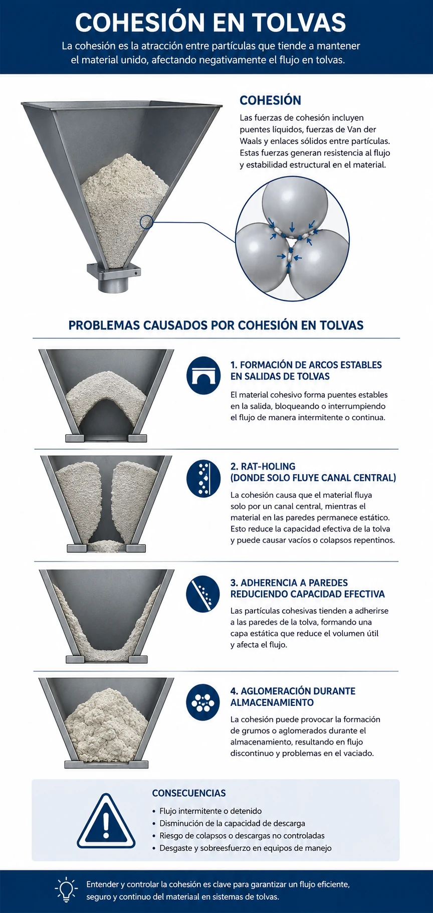

Propiedades de sólidos particulados
El polvo no es un líquido: por qué caracterizar antes de diseñar tolvas, molinos y silos
De la partícula a la planta
- 01Caracterización físicaDensidad, porosidad y los volúmenes que confundimos.
- 02Tamaño y formaDiámetros equivalentes, distribución, tamizado y láser.
- 03Comportamiento de flujoCohesión, ángulo de reposo, humedad y segregación.
- 04Propiedades mecánicas y térmicasDureza, friabilidad, conductividad e higroscopicidad.
- 05Seguridad: explosividad de polvosEl pentágono de explosión y la clase Kst.
- 06Aplicaciones al procesoMolienda, tolvas, transporte y mezclado.
Cada propiedad que veremos hoy alimenta una decisión concreta de su proyecto de alcohol a partir de caña: diseño de tolvas, potencia de molinos, eficiencia de filtración y manejo de bagazo.
¿Por qué importan las propiedades de sólidos?
Son determinantes críticos del diseño industrial; pequeñas diferencias cambian por completo el comportamiento del material.
- Un cambio de 2 % en humedad puede convertir un polvo de flujo libre en masa cohesiva.
- Una distribución de tamaño mal caracterizada resulta en segregación del producto.
- El colapso de silos es uno de los accidentes más importantes con material particulado, y muchos son prevenibles.

En su proyecto de producción de alcohol, estas propiedades determinarán el diseño de tolvas, la potencia de los molinos, la eficiencia de filtración y la calidad de la fermentación.
Caracterización física
Densidad y porosidad: tres densidades distintas que medimos con tres volúmenes distintos, y que casi todos confunden.
Densidad: verdadera, aparente y bulk
Solo material sólido
Densidad del material sólido puro, excluyendo absolutamente todos los poros. Se mide por picnometría con helio, que penetra hasta los poros nanométricos.
Para azúcar cristalina: $\rho_t \approx 1{,}587\ \text{kg/m}^3$.
Material + poros internos
Incluye los poros cerrados internos pero excluye los espacios entre partículas. Relevante para cálculos de sedimentación.
Para un grano de caña: $\rho_p \approx 1{,}200\ \text{kg/m}^3$.
Todos los vacíos
Material + poros + espacios entre partículas. Es la densidad crítica para dimensionar tolvas, silos y equipos.
Para caña molida suelta: $\rho_b \approx 150\ \text{kg/m}^3$.
Cada densidad se utiliza para cálculos específicos en el diseño de procesos industriales: elegir la equivocada puede multiplicar por diez el error de volumen.
Densidad bulk: dos estados críticos
La densidad bulk ($\rho_b$) es la propiedad más práctica pero más variable de los sólidos. Define cuánto material cabe en un silo, tolva o contenedor.
Poured density
Cuando el material se vierte suavemente, sin compactar.
Tapped density
Después de vibración estandarizada que reacomoda las partículas.

Probador automático de densidad aparente: golpea el cilindro graduado un número normalizado de veces para medir la densidad compactada.
Hasta 60 % más material en el mismo volumen
Para harina de trigo eso es +60 % de masa en el mismo volumen.
Factores que afectan $\rho_b$:
- Distribución de tamaños: los finos llenan los huecos entre gruesos.
- Forma de partícula.
- Humedad: aumenta la cohesión.
- Historia de manejo: vibración y compresión durante el transporte.
La diferencia suelta/compactada es la base de los índices de Carr y Hausner que veremos en flujo.

Micro-CT de partículas: los poros internos (claros) cambian densidad, transporte de masa y secado. Escala: 2 mm.
Porosidad: de partícula y de lecho
Espacios (poros) internos dentro de cada partícula individual.
Para carbón activado puede alcanzar 0.8 (80 % vacío).
Espacios entre partículas en un lecho empacado.
Esferas uniformes, empaque aleatorio: $\varepsilon_b \approx 0.4$.
El bagazo tiene $\varepsilon_p \approx 0.5$ (estructura fibrosa) y $\varepsilon_b \approx 0.6$ (empaquetamiento suelto), dando una densidad bulk de apenas 120 kg/m³. Esa alta porosidad complica el transporte pero facilita el secado.
Tamaño y forma de partícula
Para una esfera el diámetro es inequívoco. Para todo lo demás, hay que decidir qué "diámetro" queremos medir.

Una misma partícula irregular tiene tantos diámetros como propiedades queramos igualar a una esfera.
El diámetro de una esfera es inequívoco; el de un polvo, no
Para esferas, el diámetro es inequívoco. Para partículas irregulares debemos definir diámetros equivalentes específicos: el de la esfera que tiene el mismo volumen, la misma área, la misma velocidad de sedimentación, etc.
Una partícula acicular (en forma de aguja) puede tener $d_{\max} \approx 0.5\ \text{mm}$ pero una longitud de 5 mm: el "tamaño" depende de qué medimos.
Diámetros equivalentes
Mismo volumen
Diámetro de la esfera con el mismo volumen que la partícula.
Misma área
Diámetro de la esfera con la misma área superficial.
Misma sedimentación
Diámetro de la esfera con la misma velocidad de sedimentación.
Apertura mínima
Apertura cuadrada mínima que permite el paso de la partícula.
Para cristales de azúcar, la diferencia entre diámetros equivalentes puede ser del 20–30 %, afectando cálculos de área superficial y comportamiento en suspensión.

Curva acumulativa $Q_3$: leyendo en 10 %, 50 % y 90 % se obtienen $D_{10}$, $D_{50}$ y $D_{90}$.
Distribución de tamaño
Los procesos siempre generan una distribución de tamaños que caracteriza al material; jamás un único tamaño.
Dos representaciones:
- Curva diferencial: muestra qué fracción tiene cada tamaño específico.
- Curva acumulativa: indica qué fracción es menor (o mayor) que cada tamaño.
$D_{10}=83\ \mu m$, $D_{50}=330\ \mu m$, $D_{90}=1600\ \mu m$ en este ejemplo.
Parámetros característicos
- $D_{10}$, $D_{50}$, $D_{90}$: percentiles ($D_{50}$ es la mediana).
- Span (medida de amplitud de la distribución):
Para caña molida típica: $D_{10}=0.5\ \text{mm}$, $D_{50}=2\ \text{mm}$, $D_{90}=5\ \text{mm}$, dando $\text{Span}=2.25$, lo que indica una distribución amplia.

Columna de tamices en orden decreciente sobre un vibrador mecánico, con bandeja colectora al fondo.
Análisis granulométrico por tamizado
El tamizado sigue siendo el método más usado industrialmente para partículas entre 45 µm y 10 mm, por su simplicidad, robustez y relevancia directa para operaciones.
- Secar la muestra a 105 °C si contiene humedad.
- Pesar muestra inicial (100–500 g según tamaño máximo).
- Apilar tamices en orden decreciente, bandeja al fondo.
- Tamizar 10–15 minutos en vibrador mecánico.
- Pesar el retenido en cada tamiz.
- Verificar el cierre de balance de masa a ±1 %.
Cada tamiz aporta una fracción retenida; su suma acumulada reconstruye la curva.
Cálculos del tamizado
Fracción retenida en el tamiz $i$:
Fracción acumulativa pasante:
Limitaciones: no aplicable a materiales cohesivos, aglomerantes o muy frágiles que se rompan durante el tamizado.
Difracción láser
Mide partículas de 0.1 a 3000 µm en minutos y con alta reproducibilidad.
Principio:
Un haz láser atraviesa una suspensión diluida de partículas que dispersan la luz según su tamaño:
- Partículas grandes dispersan a ángulos pequeños.
- Partículas pequeñas dispersan a ángulos grandes.
Detectores concéntricos miden la intensidad angular; los algoritmos invierten el patrón para obtener la distribución.

Flujo del equipo: dispersión de la muestra, medición óptica, análisis de datos y autolimpieza.
Ventajas sobre el tamizado
- Rango amplio en una sola medición.
- Incluye finos por debajo de 45 µm.
- Automatización completa.
- Rapidez: 2–3 minutos por muestra.
Para su proyecto es ideal para caracterizar azúcar, levadura y auxiliares de filtración, donde los finos importan.
El reporte entrega directamente $D_{10}$, $D_{50}$ y $D_{90}$ junto con la curva completa.
Forma de partícula


La esfericidad ($\Phi$) cuantifica la desviación de la esfera perfecta: $\Phi = \dfrac{A_{\text{esfera de igual volumen}}}{A_{\text{real de la partícula}}}$

Estructura porosa al SEM (15 kV, 5 µm, 3000×): cada poro multiplica la superficie disponible.
Área superficial específica
El área superficial específica ($A_s$) representa los metros cuadrados de superficie por kilogramo de material, gobernando todas las interacciones interfaciales: disolución, adsorción, reacción y sinterización.
Para esferas uniformes, donde $d_p$ es el diámetro de partícula:
- Partícula de 1 mm: $A_s = 5\ \text{m}^2/\text{kg}$.
- Partícula de 1 µm: $A_s = 5{,}000\ \text{m}^2/\text{kg}$.
¡Reducir el tamaño 1000× aumenta el área 1000×!
Medición por adsorción BET
Nitrógeno a 77 K forma una monocapa sobre la superficie; el volumen adsorbido indica el área real, incluyendo poros internos.
Aplicaciones críticas para su proyecto:
- Velocidad de disolución de azúcar proporcional a $A_s$.
- Actividad de la levadura depende de $A_s$ para el intercambio.
- Eficiencia de auxiliares de filtración directamente relacionada con $A_s$.

Analizador de área superficial por fisisorción de nitrógeno (BET).
Comportamiento de flujo
Los polvos fluyen como líquidos pero transmiten esfuerzos como sólidos: ese carácter dual es lo que paraliza plantas enteras.

El mismo material forma pilas distintas según su carácter de flujo.
Propiedades de flujo
Los polvos exhiben un comportamiento fascinante: fluyen como líquidos pero transmiten esfuerzos como sólidos, creando desafíos únicos de manejo.
Carácter de flujo:
- Free-flowing: arena seca; azúcar cristalina facilita la dosificación.
- Flujo fácil: azúcar granulada.
- Cohesivo: harina; bagazo húmedo requiere diseño especial de tolvas.
- Muy cohesivo: harina húmeda; levadura húmeda forma pasta.
Entender estas diferencias previene costosos problemas de "no-flujo" que paran plantas enteras.
Cuatro palancas controlan si un polvo fluye o se atasca.
Factores determinantes
- Tamaño: los finos (< 100 µm) son típicamente cohesivos.
- Humedad: los puentes líquidos causan cohesión.
- Forma: las esferas fluyen mejor que las agujas.
- Superficie: la rugosidad incrementa la fricción.

El movimiento de masa depende de la naturaleza del material, su humedad y la pendiente del talud.
Ángulo de reposo
El ángulo de reposo ($\alpha_r$) es la pendiente del cono que forma un polvo al verterse libremente sobre una superficie horizontal.
- $\alpha_r < 30^\circ$: excelente flujo (arena seca).
- $30\text{–}35^\circ$: buen flujo (azúcar granulada).
- $35\text{–}40^\circ$: flujo aceptable (sal de mesa).
- $40\text{–}45^\circ$: flujo pobre (harina).
- $> 45^\circ$: muy pobre (cacao).
Diseño del ángulo de tolvas: la pared debe ser al menos 10° mayor que $\alpha_r$ para garantizar el deslizamiento.
Densidad suelta vs. compactada: Carr y Hausner
ASTM D7481
Para $\rho_{\text{suelta}}$: verter 100 mL en probeta sin vibración. Para $\rho_{\text{comp}}$: someter la probeta a 100 golpes normalizados.
IC = índice de Carr · RH = razón de Hausner.
- IC ≤ 10 % (RH 1.11): flujo excelente.
- 11–15 % (1.12–1.18): bueno.
- 16–20 % (1.19–1.25): aceptable.
- 21–25 % (1.26–1.34): pasable.
- 26–31 % (1.35–1.45): pobre.
- > 32 % (> 1.46): muy pobre.
Ejemplo: harina con IC = 35 %, RH = 1.54 predice flujo problemático, confirmado en la práctica. Azúcar granulada con IC = 12 %, RH = 1.14 indica buen flujo.

Cuando la fuerza cohesiva ($F_{\text{coh}}$) supera el peso ($W$), el polvo deja de fluir.
Cohesión: fuentes entre partículas
Dominan en partículas < 100 µm, superando su propio peso.
Generan fuerzas 10–1000× mayores que Van der Waals. Críticos entre 20–80 % de saturación.
Por fricción/contacto, especialmente en ambientes secos.
En partículas fibrosas o angulares.

Bridging, arching, rat-holing y material adherido: las cuatro caras del no-flujo.
Problemas causados por la cohesión
- Formación de arcos estables en las salidas de tolvas.
- Rat-holing: solo fluye un canal central y el resto queda estancado.
- Adherencia a paredes que reduce la capacidad efectiva.
- Aglomeración durante el almacenamiento.
Contenido de humedad
Material seco
Posibles cargas electrostáticas; problemas de electricidad estática con plásticos y polvos orgánicos.
Ligera cohesión
Puentes pendulares. Rango óptimo para azúcar (máx. 0.5 %) y sal (máx. 2 %).
Cohesión severa
Puentes funiculares; harina problemática sobre 14 % de humedad.
Transición a suspensión
Comportamiento líquido. Bagazo post-molienda (+50 %) requiere manejo especializado.

A mayor humedad, más cohesión: el mismo polvo pasa de fluir a apelmazarse.
Métodos de medición: pérdida por secado (105 °C hasta peso constante), Karl Fischer para trazas, NIR para monitoreo continuo.

Al formar una pila, los finos caen al centro y los gruesos ruedan a la periferia.
Segregación: mecanismos
- Percolación: los finos caen entre los gruesos.
- Trayectoria: partículas con distinta fricción/rebote siguen rutas distintas.
- Fluidización: el aire arrastra los finos selectivamente.
- Vibración: efecto "Brazil nut", los gruesos suben.
Ocurre cuando los componentes difieren en:
- Tamaño (lo más crítico: los finos migran al centro).
- Densidad (los pesados sedimentan).
- Forma (las esferas ruedan, las agujas se quedan) y propiedades superficiales.
La segregación nunca se elimina por completo: se controla con diseño.
Segregación: soluciones
- Granulación para uniformizar el tamaño.
- Diseño de equipos anti-segregación (tolvas de flujo másico).
- Minimizar los puntos de transferencia.
- Orden de adición estratégico.
La segregación nunca se elimina completamente, solo se controla.
Propiedades mecánicas y térmicas
Dureza, friabilidad, conductividad e higroscopicidad: lo que decide cuánta energía cuesta moler y cómo se almacena sin apelmazar.

Escala de Mohs (1–10): del talco al diamante, una referencia rápida de resistencia.
Dureza y friabilidad
Dureza: resistencia a la deformación, en escalas mineralógicas (Mohs 1–10) o por indentación (Vickers, Brinell).
- Azúcar: Mohs 2 (similar al yeso), fácil de moler.
- Cuarzo en cenizas: Mohs 7, abrasivo severo.
Friabilidad: tendencia a fragmentarse; se mide sometiendo la muestra a abrasión controlada y midiendo finos generados.
- Alta friabilidad: genera polvo (riesgos de salud/explosión), cambia la distribución granulométrica y obstruye filtros.
- Baja friabilidad: difícil de moler, aumenta el consumo energético.
Conductividad térmica efectiva
CONDUCTIVIDAD TÉRMICA EFECTIVA ($k_{\text{eff}}$)
La de un lecho es típicamente 5–10 % de la del sólido puro, por los contactos puntuales limitados entre partículas.
Azúcar granulada: $k_{\text{sólido}} = 0.5\ \text{W/m·K}$ pero $k_{\text{lecho}} = 0.05\ \text{W/m·K}$.
Donde $F$ es el factor de contacto entre partículas ($\approx 0.1\text{–}0.2$).
Consecuencia práctica: calentar o enfriar un lecho de polvo es lento; hay que diseñar para tiempos de residencia largos o agitar.
Capacidad calorífica y difusividad térmica
Incluye las contribuciones del sólido y de la humedad.
Donde $X$ = fracción másica de humedad.
Gobierna la velocidad de cambio térmico, crítica en secado y calentamiento.
Para lechos: $\alpha_{\text{lecho}} \ll \alpha_{\text{sólido}}$, requiriendo tiempos largos para el equilibrio.

Algunos polvos absorben humedad del aire hasta deliquescer.
Higroscopicidad
Describe la tendencia de los materiales a absorber o desorber humedad del aire circundante, estableciendo un equilibrio dinámico crítico para la estabilidad.
- No higroscópico: plásticos, mantienen su humedad independiente de la HR.
- Moderadamente higroscópico: azúcar, equilibra 0.5 % a 70 % HR.
- Altamente higroscópico: sal, cloruro de calcio; pueden deliquescer.
Las isotermas típicamente muestran histéresis: la curva de adsorción ≠ desorción por efectos capilares.
Sobre la HR crítica, la aglomeración es irreversible.
Humedad relativa crítica (HRC)
Es la humedad relativa sobre la cual ocurre aglomeración irreversible:
Para su proceso: almacenar azúcar bajo 60 % HR previene la aglomeración; la levadura seca requiere empaque barrera a < 40 % HR.
Seguridad: explosividad de polvos
Un polvo combustible suspendido en aire, dentro de un volumen confinado, con una chispa, es una bomba. Y muchos alimentos lo son.
Explosividad de polvos
Requiere cinco condiciones a la vez:
- Combustible (el polvo).
- Oxidante (aire).
- Concentración en rango explosivo.
- Fuente de ignición.
- Confinamiento.
Parámetros críticos:
- CME (Conc. Mínima Explosiva): típicamente 30–60 g/m³ para orgánicos.
- Kst (índice de explosividad): velocidad máxima de aumento de presión.
- EMI (Energía Mínima de Ignición): azúcar 30 mJ, almidón 20 mJ.
- Temperatura de ignición: nube 400–500 °C, capa 200–300 °C.

Dust explosion en un silo de almacenamiento.
Kst < 200 — débilmente explosivo.
200 < Kst < 300 — fuertemente explosivo.
Kst > 300 — muy fuertemente explosivo.
Explosión de polvo en acción
Una nube de polvo finamente dividido encierra una superficie inmensa: la combustión se propaga en milisegundos. Por eso el housekeeping (mantener limpio de polvo acumulado) es una medida de seguridad de primer orden en plantas que manejan azúcar, almidón o harinas.
Aplicaciones al proceso
Todo lo anterior se vuelve número: potencia de molienda, ángulo de tolva, velocidad de transporte y tiempo de mezclado.

La energía de molienda depende de la dureza, la tenacidad y la distribución de tamaño deseada.
Aplicación a operaciones de molienda
Ley de Bond:
Donde:
- $W_i$ = índice de trabajo (función de dureza/estructura).
- $P_{80}$ / $F_{80}$ = tamaños 80 % pasante de producto/alimentación.
Caña: $W_i \approx 15\ \text{kWh/ton}$, relativamente fácil por su estructura fibrosa.
El tipo de molino se elige según la forma y la humedad del material.
Factores críticos de molienda
- Friabilidad: determina la generación de finos indeseados.
- Contenido de humedad: muy seco causa polvo explosivo; muy húmedo empasta el molino (óptimo 10–15 %).
- Forma de partícula: las fibras requieren corte (molino de cuchillas); los cristales, fractura (molino de martillos).
Diseño de tolvas y silos
El diseño de tolvas ilustra la aplicación directa de las propiedades de flujo para garantizar una descarga confiable.
First-in, first-out
Todo el material se mueve: ideal, sin zonas muertas.
Canal central
Solo fluye un canal central; el material se estanca en las paredes.
Diferencia dramática en volumen muerto y costo construido. Su proyecto debe especificar geometría precisa basada en propiedades medidas, no en reglas empíricas obsoletas.

Tornillos, bandas y cangilones mueven el sólido entre operaciones.
Transporte mecánico
Tornillos, bandas y cangilones. Apropiado para materiales abrasivos, frágiles o de alta densidad bulk.
Donde $\varphi$ = factor de llenado (0.3–0.5).
El transporte neumático lleva el sólido en una corriente de aire por tuberías.
Transporte neumático
Fase diluida o densa. Ideal para distancias largas y múltiples destinos.
- Fase diluida: 15–30 m/s, $\mu$ = 2–15 kg sólido/kg aire.
- Fase densa: 1–10 m/s, $\mu$ = 15–100, menor desgaste.
Para su proceso: bagazo húmedo es problemático en neumático (apelmazamiento), mejor mecánico. El azúcar es compatible con ambos; el neumático es preferible por higiene.

El tipo de mezclador se elige según el mecanismo dominante.
Mezclado de sólidos
Mecanismos de mezclado:
- Convección: movimiento de grupos de partículas.
- Difusión: movimiento aleatorio individual.
- Corte: deslizamiento entre capas.
Tipos de mezcladores:
- Tambor rotatorio: convección dominante, suave.
- Ribbon blender: alto corte, versátil.
- Mezclador de arado: muy alto corte, rápido.
- Lecho fluidizado: excelente para recubrimiento.
Eficiencia de mezclado
La eficiencia de mezclado se puede modelar con:
Donde $M$ es un índice de mezclado, $k$ una constante de velocidad dependiente del equipo y $t$ el tiempo.
Validación por muestreo estadístico: CV < 5 % es típicamente aceptable.
RECUERDEN
La homogeneidad perfecta es inalcanzable. Especifiquen "suficientemente bueno" para la aplicación: el sobre-mezclado gasta energía y puede re-segregar el material.
Integración al proyecto del curso
Caracterización completa
Para cada sólido del proceso deben reportar:
- Densidades (verdadera, partícula, bulk suelta/compactada).
- Distribución de tamaño (D10, D50, D90) y curva.
- Forma y área superficial aproximada.
- Propiedades de flujo (ángulo de reposo, Carr/Hausner).
- Contenido de humedad e higroscopicidad.
Dimensionamiento de equipos
Usar los datos para calcular:
Para tolvas y silos, aplicar el método Jenike: geometría óptima para evitar arcos, dimensión mínima de salida y ángulo de tolva requerido.
Especificaciones de seguridad
Para materiales combustibles:
- Evaluar el potencial explosivo (Kst).
- Diseñar sistemas de supresión o venteo.
- Especificar housekeeping para prevención.
No subestimen esta etapa: el 50 % de los problemas operacionales se rastrean a una caracterización inadecuada de los sólidos.